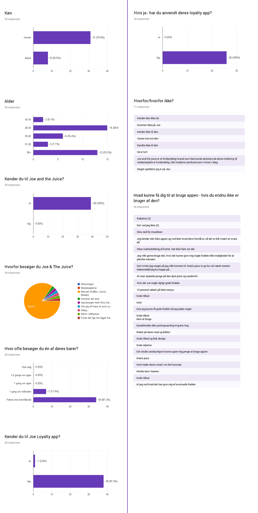

For at undersøge en varieret mængde brugere/personers kendskab til Joe & the Juice og deres Loyalty-app, har vi udsendt en survey til vores generelle Facebook-netværk (link til Google Forms). Hvis vi havde brugt vores medstuderende i denne forbindelse, kunne svarene have været farvet af, at de kender til opgaven.
Målet med spørgsmålene er at få demografisk data til vores målgruppebeskrivelse/personas, få viden om deres brug af Joe and the Juice, samt at få citater omkring Loyalty-appen. Holdninger og fordomme i forhold til virksomheden komme også tydeligt til udtryk i disse!
Vi har modtaget 39 svar, som er dokumenteret herunder.
31 kvinder
8 mænd
15-19(2 stk.)
20-24 (15 stk.)
25-30 (6 stk.)
31-35 (3 stk.)
35+ (13 stk.)
Alle 39 kender til Joe and the Juice
32 stk. kommer der pga menuen
3 kommer der slet ikke
2 fordi det ofte ligger gode lokationer man lige har "brug for"
1 pga stemningen
1 pga medarbejderne
7 besøger Joe 1 gang om måneden
34 besøger J&tJ mindre end 1 gang om måneden
1 kender Joe loyalty app
38 gør ikke
38 ud af 39 har svaret, at de ikke har brugt Joe Loyalty App
7 ud af 11 har svaret, at de ikke har kender Joe Loyalty App
4 ud af 11 er negative i forhold til J&tJ-konceptet i det hele taget
ca. 18 ud af 26 svarer positivt i at overveje at benytte app’en, hvis der blev fortalt om dens fordele (fx besparelserne, m.m.)
Der således virkelig godt potientale i at udbrede kendskabet til appen, da stort set ingen af de adspurge kendte til den eksistens.